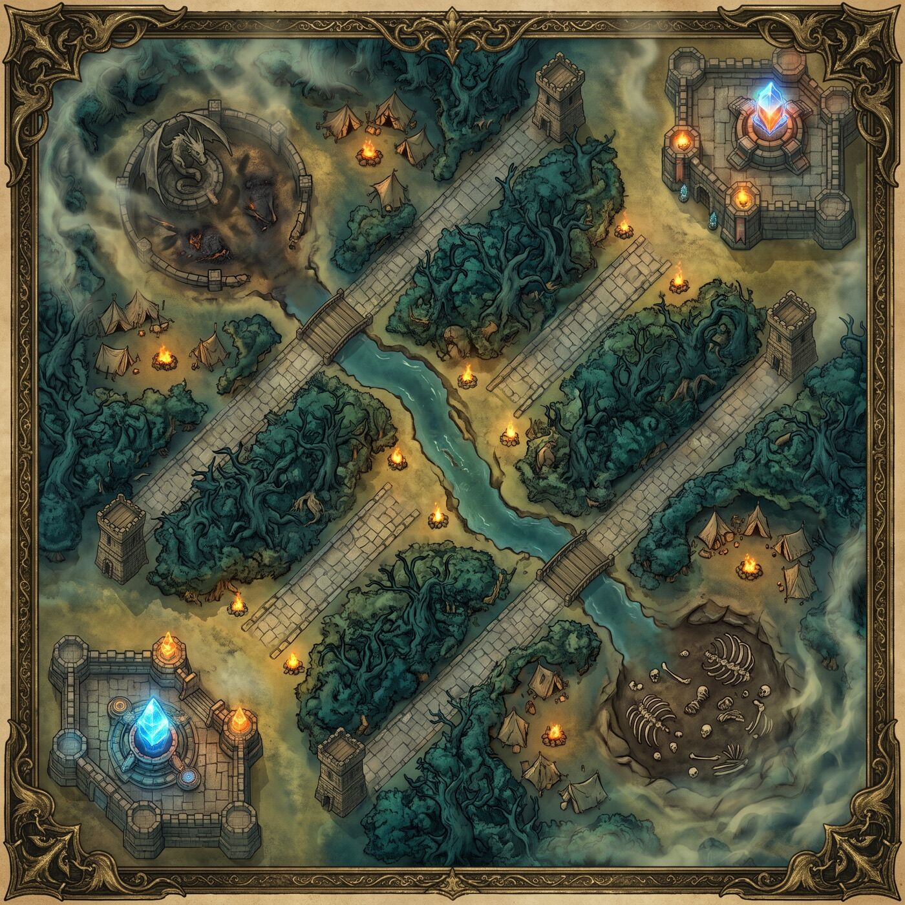
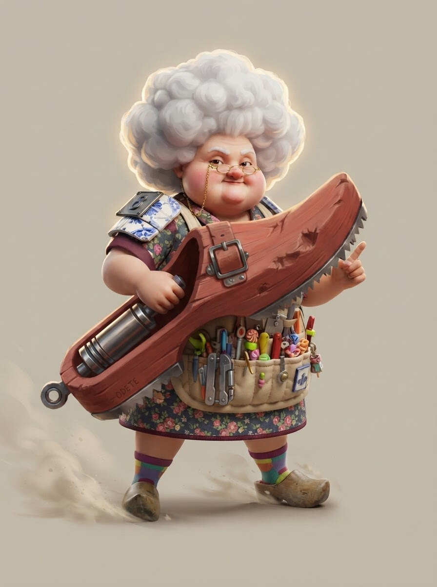
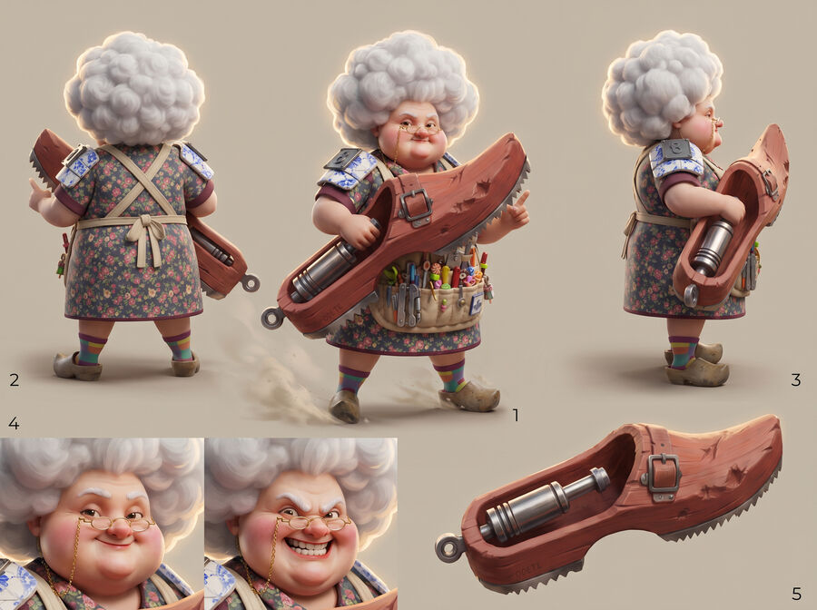

Facções disputam o Nexus porque ele pode estabilizar a Várzea — ou reescrever quem pertence a ela.
GUIA CRIATIVO EM CONSTRUÇÃO · AGOSTO 2026
FANTASIA
DO IMPROVISO.
Um mundo feito de pessoas, criaturas e objetos descartados por outras realidades. Aqui, o cotidiano ganha escala épica — e toda gambiarra pode virar lenda.
01HERÓI
APROVADO20SLOTS
TOTAIS
ABRIR O SISTEMA ↓APROVADO20SLOTS
TOTAIS
02 / LORE CANÔNICA · V0.2A COLISÃO
A COLISÃO
NÃO DESTRUIU
O MUNDO.
REMENDOU.
Quando realidades incompatíveis se chocaram, seus restos se acumularam numa periferia impossível: A Várzea do Fim.
Ali, bairros, criaturas, memórias e objetos descartados foram costurados pela mesma energia que alimenta o Nexus. Ninguém é “o escolhido”. Os heróis são gente comum que aprendeu a transformar escassez em linguagem, gambiarra em poder e defeito em assinatura.
“Se o universo jogou fora, a Várzea dá um jeito.”
Comédia irreverente na superfície; afeto, perda e pertencimento sustentam cada absurdo.
Todo poder nasce de uma solução cotidiana levada a uma escala ridiculamente épica.
03 / MAPA · EM REDESIGNA VÁRZEA
A VÁRZEA
DO FIM
O mapa mantém a leitura tática atual, mas cada rota ganha identidade narrativa, habitantes e materiais próprios.

⚒ MAPA ATUAL
REDESIGN EM CONSTRUÇÃO
REDESIGN EM CONSTRUÇÃO
CONJUNTO FORTALEZA
Prédios empilhados, caixas-d’água e fortalezas de condomínio.
FERRO-VELHO VIVO
Sucata biotecnológica que cresce, caça e recicla invasores.
PRAÇA DA TRANSMISSÃO
O centro nervoso onde antenas disputam a última frequência da Várzea.
CORREDOR DO FRETE
Viadutos, oficinas e rotas de entrega que nunca podem parar.
VAZANTE LUMINOSA
Um vazamento impossível divide o mapa e alimenta suas criaturas.
01 / UNIVERSOO MUNDO NÃO É
O MUNDO NÃO É
UM MULTIVERSO.
É UM REMENDO.
A Várzea do Fim existe onde realidades quebradas foram costuradas. Seus habitantes não foram escolhidos: sobreviveram porque aprenderam a transformar sobra em poder.
ARQUÉTIPO
RECONHECÍVEL
Avó, criança, pombo, motoboy, mascote. A leitura começa em algo humano e imediato.
OBSESSÃO
ABSURDA
Um único exagero domina a silhueta, a arma, a personalidade e o kit.
CICATRIZ
DE LORE
Todo personagem carrega um detalhe que revela o que perdeu na Colisão.
04 / CHARACTER ART GUIDEDISTINTOS
DISTINTOS
NO CONCEITO.
UNIDOS NO CRAFT.
O sistema visual controla a família sem uniformizar o elenco.
SILHUETA PRIMEIRO
Uma grande forma dominante, uma secundária e poucos detalhes terciários.
VOLUME TOYÉTICO
Anatomia estilizada, peso claro e proporções capazes de virar miniatura.
MATERIAL COM MEMÓRIA
Madeira, azulejo, plástico, tecido e sucata contam história antes do texto.
HÍBRIDO 3D + PINTURA
Design tridimensional legível com acabamento ilustrado e luz de key art.
COR DE FUNÇÃO
A rota aparece como acento tático. Nunca domina a identidade do personagem.
EXPRESSÃO AUTORAL
Rosto, gesto e arma precisam comunicar personalidade sem depender da lore.
05 / ROSTER GERAL20 HERÓIS.
20 HERÓIS.
UMA NOVA FAMÍLIA.
O guia será considerado pronto para implementação quando os dez primeiros personagens e o sistema estético estiverem aprovados.

02
03
04
05
06
07
08
09
10
11
12
13
14
15
16
17
18
19
20
CHARACTER 01
APPROVED
APPROVED
06 / PERSONAGEM-MATRIZDONA
Q W R
DONA
CHINELA
A ÚLTIMA PALAVRA
Uma avó aparentemente acolhedora que trata a arena como uma reunião de condomínio fora de controle. Seu tamanco mecânico, O Corretivo, foi reconstruído com madeira, pistões, azulejos e tudo que sobrou do edifício que ela salvou.
13VIDA
03PODER
03ARMADURA
01ALCANCE
TAMANCADA
Dano corpo a corpo. O básico consistente da personagem.
VEM CÁ, MEU FILHO
Puxa o inimigo uma casa e o prende nesta rodada.
CHINELO VOADOR
Atinge e prende todos os inimigos adjacentes.
06B / CHARACTER SHEET RENDERIZADOMESMA HEROÍNA.
MESMA HEROÍNA.
TODOS OS ÂNGULOS.
Estudo premium para validar consistência antes da modelagem 3D. Frente, costas, perfil, expressões e construção do Corretivo preservam o acabamento da arte-matriz.
TESTE PARA SUA VALIDAÇÃO · NÃO FINAL
TOQUE PARA AMPLIAR ↗07 / BESTIÁRIOO MAPA
O MAPA
TAMBÉM
ATACA.
Os monstros preservam a função mecânica dos objetivos atuais; nomes, lore e arte são a camada criativa em validação.
?01
ARUTO → Objetivo inicialGALO DE CONCRETO
Uma ave de obra que acorda a arena no grito e quebra cobertura no peito.
⚒ CONCEITO · ARTE PENDENTE?02
DRAGÃO → Objetivo elementalREI-RATO DA FIAÇÃO
Devora cabos, cospe curto-circuitos e muda o comportamento da Vazante.
⚒ CONCEITO · ARTE PENDENTE?03
BARÃO → Objetivo maiorBOI DE OUTDOOR
Uma massa de lona, ferragem e propaganda esquecida que avança sem freio.
⚒ CONCEITO · ARTE PENDENTE08 / ARSENAL DA GAMBIARRA22 ITENS.
22 ITENS.
ZERO GENÉRICOS.
Cada item deverá parecer encontrado na Várzea, revelar seu uso pela silhueta e conversar visualmente com os heróis — sem alterar seus números até a atualização mecânica fechar.
09 / CARTAS & OBJETOSDO RETRATO
DO RETRATO
PARA A MESA.
A mesma identidade atravessa carta digital, loop animado e miniatura física hexagonal.
CARTA HEROICA
Acting contextual, ambiente da rota, moldura de função e leitura instantânea de stats.
⚒ EM CONSTRUÇÃOLOOP ANIMADO
3–5 segundos: respiração, olhar, partículas e movimento secundário da arma.
PLANEJADOMINIATURA 3D
Silhueta imprimível, apoio estrutural, arma legível e base hexagonal padronizada.
TESTE PENDENTECHARACTER SHEET
Prancha renderizada com vistas, expressões, materiais e detalhe da arma.
EM PRODUÇÃO10 / KIT DE CADA HERÓINÃO BASTA
NÃO BASTA
TER UM RETRATO.
Cada personagem só fecha quando atravessa o pipeline completo.
01CONCEITODONA CHINELA · OK
02ARTE OFICIALDONA CHINELA · OK
03CHARACTER SHEETPENDENTE
04CARTAPENDENTE
05MINIATURAPENDENTE
06LOOP ANIMADOPENDENTE
PRIMEIRO
DEZ.
DEPOIS O JOGO.
Lore, sistema visual e Dona Chinela como personagem-matriz.
EM CURSOUm herói por rota, mapa e primeiros monstros.
PRÓXIMODez heróis, cartas, UI, miniaturas-piloto e loops aprovados.
MARCOSubstituição total do elenco, seguida por itens e expansões.
FUTURO